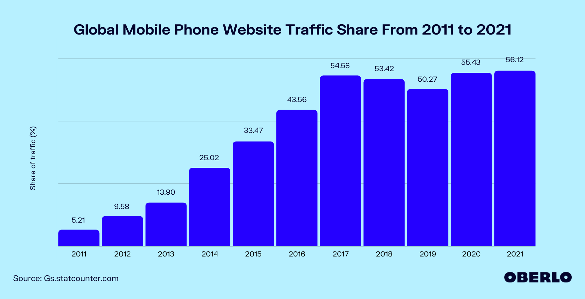

Was ist responsive Web-Design ???
Der begriff leitet sich aus dem Englischen responsive reagierend ab.
Responsive Web-Design beschreibt, dass eine Webseite auf allen Endgeräten gut bedienbar ist. Also soll die Webseite auf dem Handy genau so gut funktionieren und bedienbar sein, wie auf dem Desktop.
Arten von responsiven Webseiten [1]
Abgegrenzte mobile Webseite
Bei abgegrenzten mobilen Websiten wird die Website für das Handy auf einer extra Adresse bereitgestellt.
Ein gutes Beispiel ist Wikipedia.
Ist die deutsche Webseite für den Desktop unter https://de.wikipedia.org/ zu finden,
so ist die mobile Webseite unter https://de.m.wikipedia.org/ zu finden.
Die erkennung von Handy oder Desktop kann per JavaScript im Client (Browser) ablaufen,
oder bei einem Dienst wie Cloudflare auf dem Server ablaufen.
Adaptive Webseite
Bei einer adaptiven Webseite wird das Design "hart" auf das Endgerät angepasst.
Es gibt eine bestimmte Bildschirmbreite, bei der das Layout von Desktop auf Tablet oder Handy wechselt.
Hierbei werden keine extra Subdomains für die mobile Webseite benötigt.
Es kann schon alles im Browser (Client) ablaufen, z.B. per CSS3 Media Queries oder per JavaScript.
Liquide Webseite
Bei einer liquiden Webseite gibt es keine bestimmte Bildschirmbreite bei der das Layout wechselt.
Das Layout ist in CSS so erstellt, dass immer der zur verfügung stehende Platz genutzt wird.
Standardgrößen bei Webseiten [2]
Wenn man eine Webseite responsiv macht, gibt es Standardgrößen an die man sich halten kann.
| Gerät |
Standardgrößen (Bildschirmbreite) |
| Handy |
320px bis 480px |
| Tablets |
768px bis 1024px |
| Desktop |
1024px+ |
Manchmal ist es aber auch nützlich sich beim Testen an nicht standardisierte Größen zu halten.
Beispiele dafür sind die Navigationsleiste auf einer Webseite.
Warum brauche ich das auf meiner Webseite ???
Da die Zahlen von mobiler Nutzung immer weiter steigen,
ist es ratsam beim erstellen von Webseiten immer auch auf die mobilen Nutzer zu achten.

Quelle: OBERLO
Wie in diesem Diagram gut erkennbar ist, stammen 2020 55.43% des weltweiten Internet Datenverkehrs von mobilen Geräten.
SEO – Search Engine Optimization
Damit die eigene Webseite bei Suchmaschienen einen hohen Rang bekommt, sollte man unbedingt auf Usability auf allen Bildschirmgrößen achten.
Denn Handys sind, wie oben beschrieben, mehr als 50% des Internettraffics.
Man kann die Usability testen, sowie die Performance der eigenen Webseite.
Hierzu kann man sich z.B. bei Firefox das Add-On Lighthouse herunterladen.
Mit diesem Add-On kann man sich einen Report über seine Webseite generieren lassen.
Man kann in dem Report dann Sachen sehen wie z.B. Performance, Usability, Sicherheit, usw.
Ein beispielhafter Lighthouse Report von index.html
Wie mach ich das ???
Ein responsives Design lässt sich auf die drei Arten, hier beschrieben, bewerkstelligen.
Es gibt jedoch unterschiede, wie man diese Arten umsetzen kann.
Über CSS
Nur bei adaptiven und liquiden Webseiten möglich.
Media Queries im HTML [1]
<head>
<link rel="stylesheet" type="text/css" media="screen and (max-width: 480px)" href="pfad/zur/css-datei/für/handys.css">
</head>
Wie oben erkennbar, wird die CSS-Datei nur benutzt wenn die Bildschirmbreite unter 480px ist.
Das Bringt natürlich einige limitierungen mit sich.
Man kann hier Regeln schreiben, die nur ab 480px abwärts aktiv sind.
Man kann nicht mischen und muss beim programmieren immer zwischen den Dateien hin und her gehen.
Hinzuzufügen ist auch, dass diese Methode eine höhere Datenlast ist und mehr Dateien herunterlädt,
auch wenn das Gerät über die angegebene Bedingung nicht erfüllt.
Media Queries in CSS [1]
.css-klasse {
color: #000000;
}
@media screen and (max-width: 480px) {
.css-klasse {
color: #ffffff;
}
}
In diesem Beispiel bekommt die CSS-Klasse css-klasse ab 480px abwärts eine weiße Schrift.
Hier wird direkt in der CSS-Datei bestimmt wann welche Regeln aktiv sind.
Diese Methode wird von den meisten Webseiten verwendet,
weil hier in nur einer Datei die ganze Webseite gestylt wird.
Es ist demnach weniger Datenlast.
Über JavaScript
Hier ist ein Beispiel von einer möglichen adaptiven Webseite.
const element = document.getElementById('some-id');
if(window.innerWidth <= 480) {
element.classList.add('mobile');
} else {
element.classList.remove('mobile');
}
window.onresize = function() {
if(window.innerWidth <= 480) {
element.classList.add('mobile');
} else {
element.classList.remove('mobile');
}
}
In diesem Beispiel wird dem Element mit der id some-id bei einer Bildschirmbreite von unter 480px die CSS-Klasse mobile gegeben.
Wenn die Bildschirmbreite über 480px ist wird sie wieder entzogen.
Auch hier wird in der Webseite eine Datei eingebunden,
die wieder mehr Datenlast verursacht.
Selbst ausprobieren
Zum selbst ausprobieren empfielt sich ein HTML-Sklett zu konstruieren
und darin ein Element basierend auf der Bildschirmbreite zu verstecken.
Du kannst deine Webseite testen mit dem Bildschirmgrößen testen Panel.
Auf Firefox kannst du jederzeit CTRL + SHIFT + M drücken um in diese Ansicht zu wechseln.
In Google Chrome lässt sich dieses Panel öffnen indem man in die Entwickler Tools Ansicht umschaltet,
dort kann man dann auch wieder CTRL + SHIFT + M drücken und bekommt die Handy-Ansicht.
Das war 's
Nun solltest du die Grundlagen von responsive Web-Design wissen.
Hierkannst du noch Beispiele von dieser Webseite finden und Erklärungen dazu.
@media screen and (max-width: 810px) {
div#nav {
border-radius: 0;
justify-content: center;
}
div#nav > div#desktop-nav {
display: none !important;
}
div#nav > div#mobile-nav {
display: flex !important;
}
}
Hier wird ab einer Bildschirmbreite von 810px die Navigationsleiste von Desktop auf Tablet/Handy umgestellt.
Demnach ist diese Regel eine adaptive, weil sie einen festen Breakpoint besitzt.
@media screen and (max-width: 300px) {
div#nav > div#mobile-nav > h1 {
font-size: 1.5rem;
}
}
Ab einer Bildschirmbreite von 300px wird die Größe der Schrift in der Nav-Bar verkleinert,
damit die Schrift sich nicht in zwei Teile teilt und mehr platz einnimmt.
Auch diese Regel ist adaptiv.
div#content {
padding: 3.5rem 0;
max-width: 1024px;
width: 100%;
}
Ein Beispiel einer liquiden Regel.
Der Seiteninhalt ist maximal 1024px groß.
Wenn der Bildschirm kleiner ist als 1024px, dann passt sich der Inhalt kontinuierlich der Bildschirmbreite an.
Quellen
Genaue angaben sind im Inhalt der Seiten zu finden.